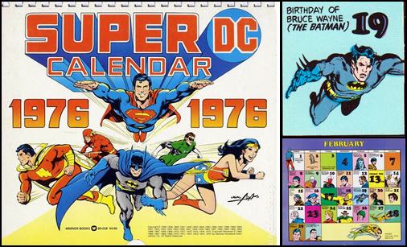
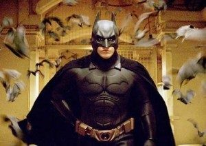

 Nace Bruce en Ciudad Gótica, hijo de Martha Kane Wayne y Thomas Wayne. En español, se lo adapta como Bruno Diaz. La referencia al día y mes aparecen muy raramente, por ejemplo, en episodio piloto de Batwoman, en 2019, o en un calendario de DC de 1976, de Bob Razakis. El año, es un poco más complejo, no obstante, se lo ubica en 1913, remarcando que la primera aparición oficial en los comics fue en 1939, en la que se lo reconoce con veinticinco años, acompañando la apariencia física y la secuencia de las sagas.
Los padres del joven Bruce, por entonces con ocho años, son asesinados ante sus ojos, durante un robo cuando salían de un cine. El responsable por el crimen es Joe Chill, no obstante, hay que remarcar que muchas veces se asocia el episodio con Jack Napier, quien luego se torna Joker. La interpretación es resultado de unas escenas en la película Batman (1989) de Tim Burton, donde el asesino susurra una frase al joven Bruce al momento de los asesinatos, y que más tarde vuelve a sucumbirlo en un encuentro frente a frente con Joker, provocándolo y dejándolo atónito. “¿Has bailado con el diablo bajo la pálida luz de la luna?”. Burton instala de esta forma el círculo entre Batman y Joker, donde uno no puede existir sin el otro. En la imagen que acompaña (se puede hacer clic sobre la misma para ampliar) se identifican ambos momentos clave.
Bruce emprende una odisea por el mundo para auto-descubrirse.
El multimillonario llega a Oriente, donde logra desarrollar sus habilidades de combate.
A los veinticinco años, el hijo prodigio de Ciudad Gótica regresa y se torna Batman, aventurándose detrás de la máscara por primera vez el nueve de abril. La transformación del héroe está claramente detallada en la obra Batman: Año Uno, de Frank Miller, en la que se redefinen sus orígenes.

Batman es un superhéroe que nació para el cómic un año antes que termine la década del cuarenta del siglo pasado, sin
embargo, y como ningún otro superhéroe, logró trascender las fronteras del mismísimo papel, donde todos los superhéroes
tuvieron sus inicios y dieron sus primeros pasos, y recaló en el cine y la tevé con un éxito formidable y que iría in
crescendo a través del tiempo y las diferentes adaptaciones de la historia original. Es así, que el multiverso DC
posibilita romper los límites de la imaginación de los escritores y diseñadores, ya fueran reconocidos decenas de
Batman, con narrativas muy particulares. Pero además, existe el multiverso oscuro, otros 52 mundos dominados por las
tinieblas y las peores situaciones posibles, donde están por ejemplo Batman Merciless (en Tierra -12, que recibe el
poder del dios Ares al tomar pose de su espada), The Drowned (en Tierra -11, una versión femenina que tiene la fuerza de
Atlantis), o Batman Red Death (en Tierra -52, que perpetra los poderes de Flash); estos mundos se identifican con el
símbolo menos.
Los autores estadounidenses Bob Kane y Bill Finger fueron los creadores del personaje para la editorial norteamericana
DC Comics, dedicada especialmente a la realización de cómics. La primera aparición se dio en el marco de la historia El
caso del sindicato químico, la número 27, más precisamente, y que data de mayo del año 1939.
Características principales del personaje
Pero Batman no es solamente Batman, como sabemos y como sucede con tooodos los superhéroes que se precien de tales,
Batman, es el alter ego del multimillonario Bruno Díaz, un empresario que gana millones con sus empresas, y asimismo
dedicado a las actividades benéficas, quien durante su infancia perdió a sus padres como consecuencia de un asesinato
del cual él mismo fue testigo y que sería la causa fundamental de su decisión de crear a ese superhombre justiciero.
Tras ese hecho trágico, Díaz, jura venganza y se compromete a luchar contra el crimen en su ciudad, Ciudad Gótica.
Así surge entonces Batman, en quien se convierte el mismísimo Bruno Díaz cada vez que el peligro acecha a alguien en la
ciudad.
El fisique du rol de Batman consiste en un traje que emula a un murciélago, por esto mismo es que también se lo suele
denominar popularmente como el hombre murciélago.
Una de las características salientes de Batman es que no dispone de súper poderes, sino que su gran súper poder se
encuentra en su propia inteligencia y en la aplicación de la misma en conjunción con la tecnología y la ciencia, a favor
de la creación de diferentes armas y utensilios que le permiten contrarrestar a los delincuentes y villanos con los que
se enfrenta.
Toda esta actividad que implica Batman y la verdadera identidad de este héroe, Bruno Díaz, la lleva a cabo de manera
clandestina en la llamada Baticueva, un recinto dispuesto en la parte subterránea de su millonaria mansión y tan solo
algunas personas de su entorno más cercano como ser Robin, su fiel adalid, o Alfred, su mayordomo, conocen.
Ese secreto bien guardado bajo las llaves de su mansión y de sus aliados incondicionales, cree Bruno Díaz, que es la
clave de su éxito, porque de esta manera velada es que Batman puede sorprender e imponer sus fuerzas e inteligencia a
sus enemigos.
Su identidad oculta le permite sortear las trampas o la localización por parte de los villanos que lo persiguen y que
quieren el mal de Ciudad Gótica.
Enemigos, entre los que destaca Guasón o Jóker
En su larga historia combatiendo contra el crimen, Batman, ha cosechado muchos enemigos, entre los que se destacan: el
guasón, gatúbela, dos caras, el pingüino, hiedra venenosa, espantapájaros, Ra’s al Ghul y Bane.
Pero sin dudas, si tenemos que destacar a algunos de estos villanos, el Guasón es el más popular y el que todos los
fanáticos de Batman más disfrutan de ver, y por supuesto más cuando lo logra derrotar.
Guasón, o Jóker, tal era su denominación original, la traducción al español sería bromista, y es esa justamente una de
las características salientes de este personaje súper malvado, realizar fechorías mezcladas con bromas pesadas, claro
está.
En tanto, su apariencia física tiene que ver con su nombre, ya que lo que destaca de su cara es una enorme sonrisa
pintada, cual payaso, incluso se viste como tal.
Pero esa sonrisa tiene una causa ni graciosa ni agradable y se debe a un terrible accidente que padeció y que lo
deformó.
La impresionante acogida que logró el personaje de Batman hizo que al año de su primera aparición lograse su propia
revista que relataba sus diversas aventuras.
En el año 1941 se dio curso a la primera adaptación televisiva de la historia del hombre murciélago que por supuesto
causaría sensación y lo mantendría durante varias décadas en la pantalla chica.
Éxito reciente del personaje en sus adaptaciones cinematográficas
También el cine fue crucial y fundamental para sumar al fenómeno de Batman, que al día de hoy, parece no tener fin en el
cine.
En el año 1989, las taquillas se rinden ante los pies de la cinta Batman, protagonizada por Michael Keaton, Jack
Nicholson y Kim Bassinger, y dirigida por Tim Burton, más la musicalización del enorme Prince.
Y tras un parate de un par de años, en 2005, la leyenda Batman regresa con toda su furia con la cinta Batman Begins,
dirigida por Christopher Nolan y estelarizada entre otros por Christian Bale.
Debemos destacar de este regreso la personificación que el fallecido actor Heath Ledger hizo del Guasón.
Logró en gran medida que los fanáticos de las películas de Batman se olvidasen bastante de la fenomenal interpretación
que años antes había hecho de este mismo personaje el gran Jack Nicholson, pero en la propuesta de Burton.
El de Ledger era un Guasón más oscuro y temible, mientras que el de Nicholson, si bien era de temer, aparecía más
lúdico.
Indudablemente, las mencionadas, son dos propuestas de Batman que no se pueden dejar de ver.
Batman Comic 1.87 Acuario (19/02/1915)
Adam West 1.87 Virgo (19/09/1928) Batman (1966)
Michael Keaton 1.77 Virgo (05/09/1951) Batman (1989)
Batman Returns (1992)
Val Kilmer 1.82 Capricornio (31/12/1959) Batman Forever (1995)
George Clooney 1.8 Tauro (6/05/1961) Batman & Robin (1997)
Christian Bale 1.83 Acuario (30/01/1974) Batman Begins (2005)
The Dark Knight (2008)
The Dark Knight Rises’ (2012)
Ben Affleck 1.92 Leo (15/08/1972) Batman V Superman (2016)
Suicide Squad (2016)
Justice League (2017)
Robert Pattinson 1.85 Tauro (13/05/1986) The Batman (2022)